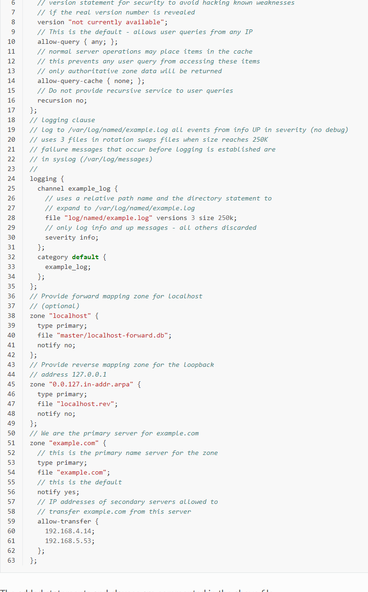

不可视境界线最后变动于：2022年5月25日 中午
实验任务
- 在自己机器上建立一个根域名解析服务，使得自己机器发出的域名解析请求，需要用到根时直接用自己的机器应答。
- 请在实验报告里写清楚自己是怎么找到解决方案的，方案的原理是什么，自己怎么实现的
- 分析这么干的好处坏处，技术检测一下中国各大ISP是怎么干的，为什么要这么干(?)
资料查找
首先在IANA官网上找到root相关信息和文件:

同时查找一些DNS server搭建资料, 发现基本都是使用BIND.
Domain Name Service (DNS)
Domain Name Service (DNS) is an Internet service that maps IP addresses and fully qualified domain names (FQDN) to one another. In this way, DNS alleviates the need to remember IP addresses. Computers that run DNS are called name servers. Ubuntu ships with BIND (Berkley Internet Naming Daemon), the most common program used for maintaining a name server on Linux.
而在BIND管理员手册中可以看到更多的细节.
- BIND 9 is a complete implementation of the DNS protocol. BIND 9 can be configured (using its
named.conffile) as an authoritative name server, a resolver, and, on supported hosts, a stub resolver.
在这里我们只使用BIND 9的authoritative name server的功能, 而且是primary server.- BIND 9 uses a single configuration file called
named.conf.
- BIND 9 uses a single configuration file called
- zone file:
- an operational requirement to operate two (or more) name servers (which may be contracted to a third party) which will contain the authoritative data for all the domain labels within its zone of authority in a zone file.
authoritative primary server的named.conf示例:
修改为:
1 | |
在linux中, 使用BIND9情况下DNS配置的主要文件组:
/etc/bind/named.conf.options: global DNS options/etc/bind/named.conf.local: for your zones/etc/bind/named.conf.default-zones: default zones such as localhost, its reverse, and the root hints